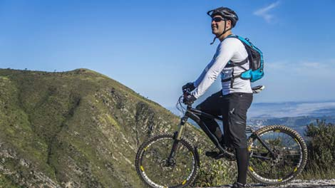

Tours

Bangtail Divide Tour
The Bangtail Divide Trail (BDT) is defined by most as a beautiful, lengthy ride feasturing views of many mountain ranges. It was built in 2003 and quickly became the local go-to trail for the locals who wanted a long ride but didn't want a long drive to the trail. BDT is close to town, making access for tours perfect for anyone who wants to get going quickly. BDT offers easy access to a ridgeline traverse with incredible views which include multiple mountain ranges and fields of wildflowers. This trail includes singletrack, switchbacks, ridgetop singletrack, and flowing downhill.
Length: 25.0 miles
Singletrack: 75%
Average Grade: 5%
Ascent: 3,611'
High: 7,923'
Skill Level: Intermediate
Price:
Half-Day: $149.00 USD
Full-Day: $189.00 USD

Mystic Lake Tour
The Mystic Lake trail is an easy-access trail that follows Bozeman Creek along Sourdough Canyon Trail. This trail provides a more accessible route to Mystic Lake than the more northerly Mystic Lake route that uses New World Gulch Trail #50. The first 10-miles is a steady climb, so be prepared, but the great thing about that is it means that the last 10 miles are all downhill. Sourdough Creek provides the City of Bozeman woth 40% of their drinking water, so make sure you respect all signage throughout the tour and enjoy the scenic views!
Length: 20.4 miles
Singletrack: 5%
Average Grade: 3%
Ascent: 1,473'
High: 6,469'
Skill Level: Easy/Intermediate
Price:
Half-Day: $149.00 USD
Full-Day: $189.00 USD

Bridger Foothills Trail #534
The Bridger Foothills Trail #534 (or known as 534 among residences) is widely popular for its difficult singletrack course. This is not a trail to be taken lightly, and is only recommended for skilled riders. For those who do venture out for the full day package, expect to be without cell service for much of the ride, but to see incredible views of the mountain ranges. This has a steady and intense climb, and a powerful, fast decline. You'll enjoy scenic views and incredible sensations as you climb this mountain!
Length: 22.7 miles
Singletrack: 100%
Average Grade: 12%
Ascent: 5,554'
High: 8,973'
Skill Level: Intermediate/Difficult
Price:
Half-Day: $169.00 USD
Full-Day: $199.00 USD
South Cottonwood Creek Trail
The South Cottonwood Creek Trail is an intermediate, technical trail in which you will cross the creek (riding or carrying across the log bridge, depending on the height of the water and your preference) 4 times. It is a mostly-wooded trail, which is ideal for hot summer days. The views aren't as amazing as some of our other tours, but it is perfect for someone wanting to learn how to ride without being distracted by the many views of mountains that our other tours offer. We recommend this trail to children 8+ years, as well as anyone new to the sport of mountain biking.
Length: 8.3 miles
Singletrack: 100%
Average Grade: 4%
Ascent: 87'
High: 7,140'
Skill Level: Beginner/Intermediate
Price:
Half-Day: $149.00 USD
Full-Day (multiple rounds): $189.00 USD